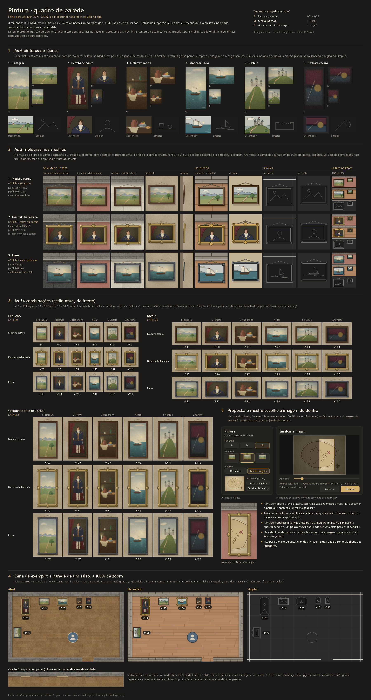
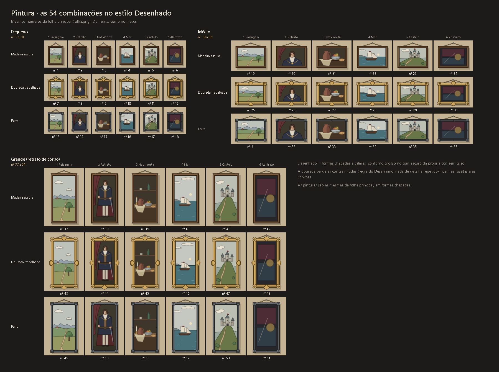
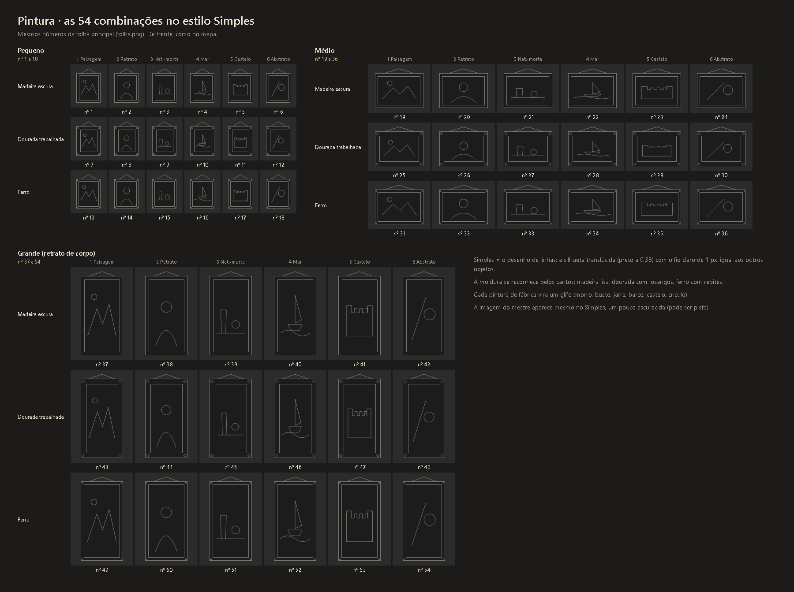

Pintura · quadro de parede
Folha para aprovar, 27/11/2026. Só o desenho: nada foi encaixado no app.
Um objeto novo para a ferramenta Objeto: o quadro pendurado na parede. São 3 tamanhos, 3 molduras e 6 pinturas de fábrica, 54 combinações numeradas, cada uma nos 3 estilos do mapa (Atual, Simples e Desenhado). E o mestre pode pôr uma imagem dele no lugar da pintura.
A folha
Clique na imagem para abrir no tamanho real. As seções têm número (1 a 5) e cada combinação tem o seu nº, para você citar: por exemplo "o nº 26 está escuro demais".

As 54 combinações no Desenhado e no Simples
Os mesmos números da folha. O estilo é do mapa, não do objeto: o mestre escolhe o quadro uma vez e ele segue o estilo do mapa.


Teste: a imagem de dentro
É a proposta da seção 5 funcionando. Escolha uma imagem sua (ela fica só no seu navegador, nada é enviado), arraste para escolher a parte que aparece e aproxime. Troque o tamanho e a moldura: o enquadramento continua o mesmo.
Decisões do Claude (para você aprovar) e perguntas
- No mapa, o quadro fica de frente, encostado na parede, como a tapeçaria e a arandela que já estão no app; a 3/4 usa o mesmo desenho e o giro deita a imagem. A opção B (de cima de verdade, um risco de 2 a 3 px) está na seção 4 só para comparar.
- Tamanhos: Pequeno em pé (0,5 × 0,72 casa), Médio deitado (1 × 0,82) e Grande de corpo inteiro (1 × 1,66, a mesma altura da tapeçaria). A pegada inclui a faixa do prego e do cordão.
- Prego e cordão em V à mostra: é o que diz "pendurado" de relance e separa o quadro de um tapete no chão.
- As pinturas de fábrica se arrumam sozinhas no formato (o retrato ganha corpo inteiro no Grande; a paisagem e o mar ganham céu). Só a imagem do mestre tem encaixe.
- Imagem do mestre: recorte que cobre a janela inteira, com arrastar e aproximar. Guarda só o ponto do meio e a aproximação, por isso trocar tamanho ou moldura mantém o enquadramento.
- No Simples, a pintura de fábrica vira glifo de linhas, como os outros objetos; a imagem do mestre aparece mesmo assim (um pouco escurecida), porque pode ser pista para os jogadores.
- Cores: madeira escura = Nogueira do app; ferro = Ferro do app; dourada = um latão velho mais apagado que o Latão do app, para o ouro não estourar.
- A vista de lado fica só de referência: é uma tábua fina e não ajuda no mapa.
Perguntas
- Aprova a opção A (de frente, encostado na parede) para o mapa?
- Os 3 tamanhos estão bons, ou quer o Pequeno deitado também?
- Alguma pintura ou moldura para refazer? Diga o número (pintura 1 a 6, combinação nº 1 a 54).
- A moldura deve ter a cor trocável pelo mestre (como o material dos móveis), ou as 3 molduras fixas bastam?
Fica para o plano do encaixe: onde a imagem do mestre é guardada e como ela chega à tela dos jogadores.
Arquivos desta pasta
folha.png: a folha principal (seções 1 a 5).combinacoes-desenhado.pngecombinacoes-simples.png: as 54 nos outros dois estilos.fonte/desenho.js: o desenho do quadro (pinturas, molduras, prego e cordão, chão e parede). Esta página usa ele no teste.fonte/folha.js,fonte/gerar.htmlefonte/gerar.cjs: montam e gravam as folhas. Para gerar de novo, da raiz do repo:node docs/design/pintura-objeto/fonte/gerar.cjs